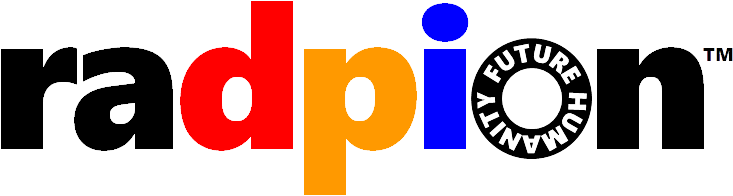

주식회사 라드피온 디지털보고서 프로젝트
디지털보고서는 PDF나 한글파일과 달리 디지털 구조화된 문서입니다. 국제적으로 문서의 디지털 보존의 표준규격으로 PDF와 함께 구조화된 문서(XML, HTML 등)을 채택하고 있으며, PDF보다 우수한 활용성을 가집니다. 보고서 내에서 일관된 구조를 가지고 있어 AI 학습을 위한 메타데이터로 그 가치가 뛰어나며, 다양한 형태로 가공 및 서비스에 용이합니다.
전곡리 발굴조사보고서
미륵사지
송국리
천마총
To be continue...
About
RADPION
3D projects
Contact